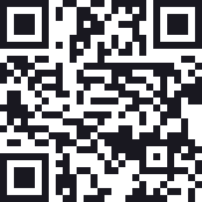
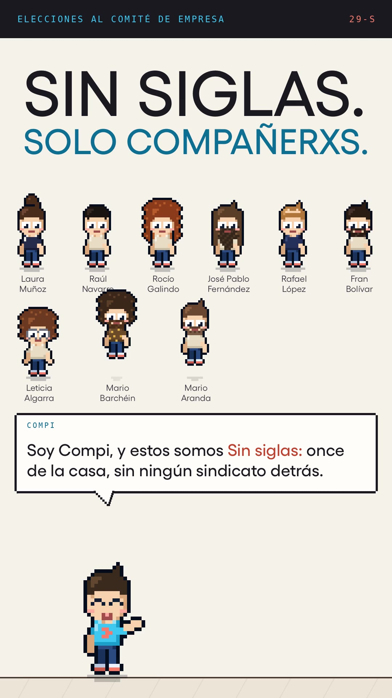

Sin siglas presenta
Nuestras nueve propuestas en menos de tres minutos, contadas por Compi y con los once en píxeles.

Dale al playYa en la websin-siglas.info/peli

Presenta Compi · con Laura Muñoz · Raúl Navarro · Rocío Galindo · José Pablo Fernández · Rafael López · Fran Bolívar · Leticia Algarra · Mario Barchéin · Mario Aranda · Violeta López · María Emilia Castillo · Guion las nueve propuestas de la candidatura · Voz Compi
Candidatura independienteVota el martes 29